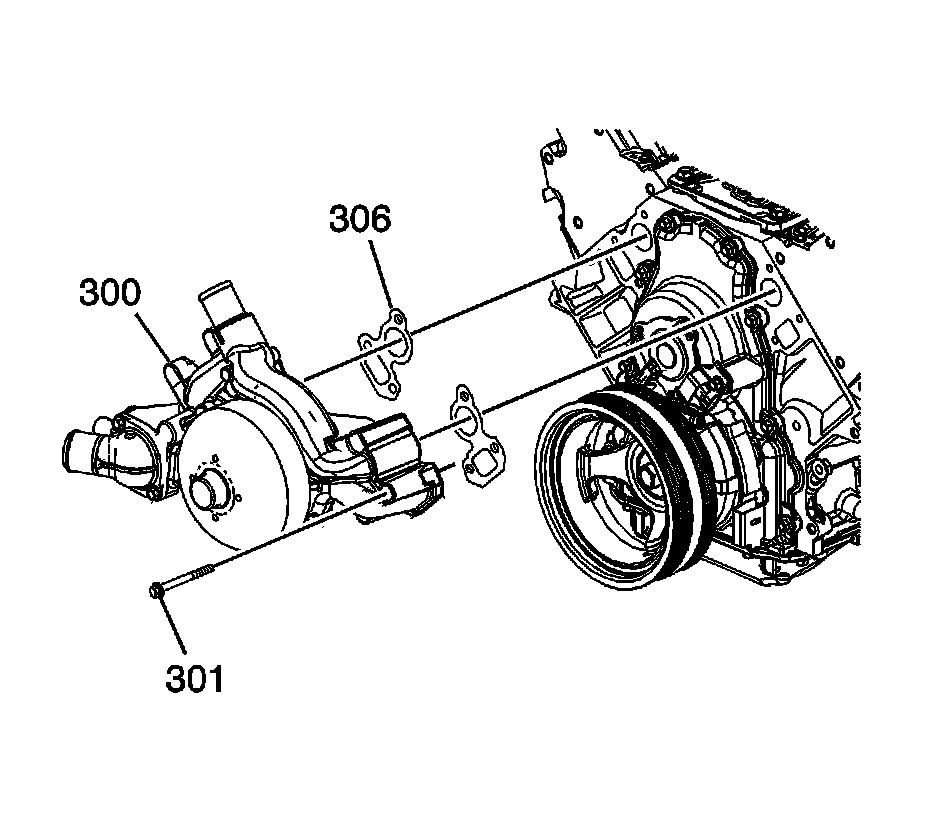

94. Water Pump Installation
Water Pump Installation (RPO LY6/L76/L92)

Notice: DO NOT use cooling system seal tabs, or similar compounds, unless otherwise instructed. The use of cooling system seal tabs, or similar compounds, may restrict coolant flow through the passages of the cooling system or the engine components. Restricted coolant flow may cause engine overheating and/or damage to the cooling system or the engine components/assembly.
Important: All gasket surfaces are to be free of oil or other foreign material during assembly.
1. Install the water pump (300) and NEW gaskets (306).
Notice: Refer to Fastener Notice.
2. Install the water pump bolts (301).
1. Tighten the water pump bolts a first pass to 15 N.m (11 lb ft).
2. Tighten the water pump bolts a final pass to 30 N.m (22 lb ft).